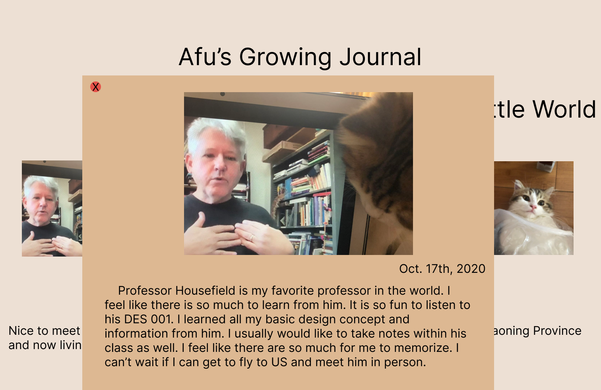

I am planning on revising my studio 2, which is the every picture project. I am doing a journal for my cat.
My goal at the end would be to have a well designed journal that can become a template for myself if I want to do something similar in the future. I would want it to be responsive to people. Also, I feel like I can add some hot spot on those pictues so people can zoom in to see my cat.
I would start with having a little explanation of the page so people could know why I have chosen the picture and how from my cat's point of view would be an important moment in his life. I would probably try to make my page look at a notebook to give the sense of it. Also, I might use some colors from my cat and make a new color pallete from there
As I mentioned before, I would like to have some hot spot so that people could zoom in onto the pictures for those ones that are a little further from my cat. Also, I am planning on doing a little background music that can be played or stopped by my audience. So if they want some music on the back there could be a playlist
I would want people to feel like it is a cute and professional website. I would want people to know more about my cat and give me the chance to memorize all the good moment that I had with him and be able to track back to them later on. To start my project, I would first make the little explanations to be shown as the graph. Then, I would make the layout more like a online journal or blog back to old days. Then I would move to have hot spot for the picture like when he is standing in the car. Lastly, when I have time, I would find some music to be fit with it.
